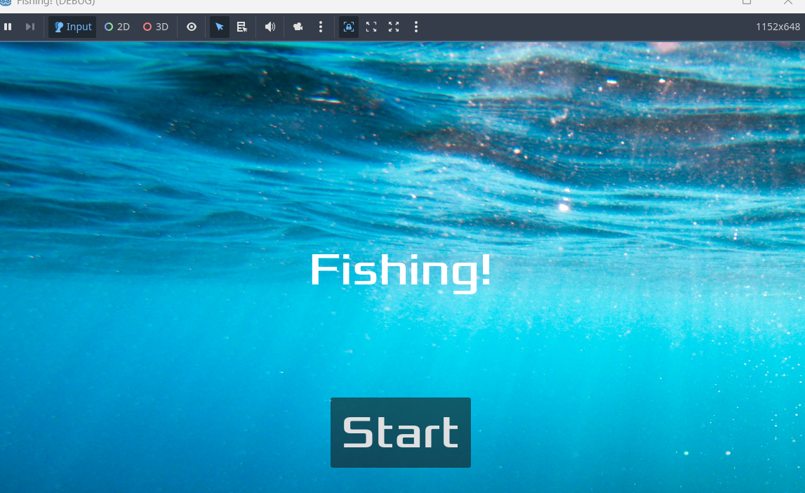
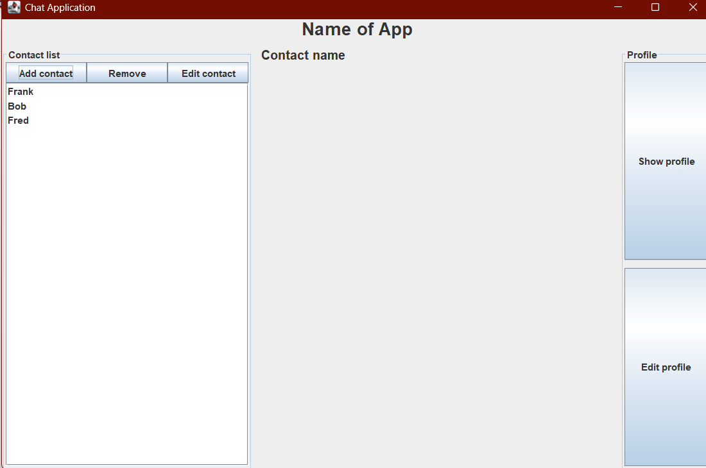
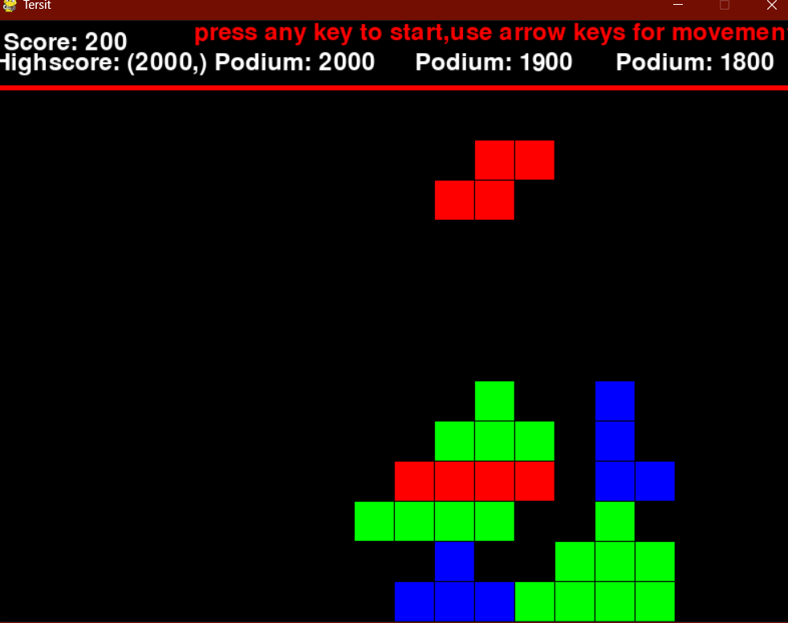

Portfolio
Projects
GitHub - WQNguyen25
Fishing Game

This project used a MicroPico controller and a TCP server to provide physical controls for a Godot fishing game. I developed the complete hardware-software integration and Python server logic, and I configured the game interaction and scoring system.
Technologies: MicroPico, Python, TCP networking, and Godot.
My role: Hardware integration, Python programming, server communication, debugging, and game input testing.
Skills demonstrated: Embedded systems, networking, problem solving, and system testing.
Messaging application

I created a Java messaging application that supports account registration and sign-in, user-to-user chats, and editing or deleting sent messages. The project focused on creating clear user flows and reliable message operations.
Technologies: Java and object-oriented application programming.
My role: Designed and implemented account, chat, and message functionality, then tested core user workflows.
Skills demonstrated: Object-oriented programming, data handling, logical reasoning, and user-focused development.
Study website
I developed an interactive study-friends website for the University of Dundee junior challenge. Users could add or remove friends and view where and when their friends were studying.
Technologies: HTML, JavaScript, and Node.js.
My role: Implemented the interactive interface, friends functionality, and server-side support.
Skills demonstrated: Full-stack web development, collaboration with a challenge brief, interface design, and problem solving.
Tetris Game

I developed a Tetris-based Python game with account login and persistent score storage. I used structured data to track block positions and rotation states, and a database to store account credentials and scores.
Technologies: Python, SQL, and SQLite-style relational database concepts.
My role: Built game logic, account management, database integration, and score functionality.
Skills demonstrated: Algorithms, data structures, database design, debugging, and technical documentation.